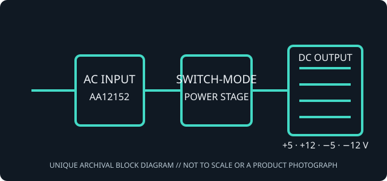

[ POWER CONVERSION // IDENTIFIED SKU ]
Astec AA12152 200 W IBM 5170 AT power supply
Astec model AA12152, cataloged as a discrete legacy PC/XT/AT supply SKU. The identity and rating are bounded to the cited record; check the physical nameplate and revision before purchase, service or installation.

HIGH-VOLTAGE AND AGE WARNING: Unplug before external inspection. Never open a PSU; capacitors can retain hazardous charge. Do not energize an unidentified, damaged or unverified supply.
Verified identity & specifications
| Manufacturer / model | Astec AA12152 |
|---|---|
| Era / form factor | Legacy PC AT-format supply; classic switched mains, not ATX, SFX or ATX-compatible signaling. |
| AC input | Check the unit nameplate and IBM 5170 service documentation for region and selector; the archived part listing does not establish a universal input range. |
| DC output rails / wattage | +5 V DC, +12 V DC, −5 V DC and −12 V DC legacy rails; 200 W unit rating reported in archived part record; IBM system documentation identifies the 5170 family supply class as 192 W. The model-specific archived material does not consistently preserve each rail current; use the complete label on the actual unit for individual/combined limits. |
| Motherboard connectors / pinout | Classic split AT motherboard power, P8 + P9 (two keyed 6-pin housings). Standard IBM AT reference arrangement: P8 pin 1 Power Good, pin 2 +5 V, pin 3 +12 V, pin 4 −12 V, pins 5–6 return; P9 pins 1–2 return, pin 3 −5 V, pins 4–6 +5 V. Confirm connector orientation and the exact unit diagram; never infer pin order from plug shape. Peripheral harness count/pinout varies by build; standard 4-pin drive plug carries +12 V, two returns and +5 V. |
| Drive connectors | Hardwired peripheral harness; 4-pin peripheral output follows legacy +12 V / return / return / +5 V arrangement where present. Count and wiring must be checked on the exact assembly. |
| Dimensions / mounting | Model-specific drawing dimensions were not found in the cited record. AT-case reference envelope: approximately 150 mm wide × 86 mm high × 140 mm deep (5.9 × 3.4 × 5.5 in); this is a fit-check reference, not a verified AA12152 measurement. Confirm depth, screw pattern, switch routing and airflow on the actual unit. |
System compatibility & replacement cross-reference
IBM PC/AT model 5170 only when the assembly label, revision, rail ratings and mounting agree. Not an XT/5160 substitute.
IBM 5170 192 W supply family record is the cross-reference; do not conflate its chassis-level rating with the 200 W label reported for this Astec assembly. See also IBM 5170 192 W power-supply record and IBM 5160 XT 130 W record. Do not exchange a 130 W XT unit and an AT-format unit solely because both use divided connectors.
A safe replacement requires verified case envelope and mount, approved AC range, rail current and combined-power limits, pin-for-pin polarity, switch harness and load compatibility. Connector appearance is not proof.
Safety, capacitor age & preservation
- Age-related electrolytic-capacitor drying, elevated ESR, leakage, cracked solder joints, degraded insulation and failed fan bearings are possible; age alone does not predict condition.
- Some period supplies also use line-filter capacitors that can crack or fail. Do not open, recap, bypass protection or probe energized equipment; use qualified PSU service or replace the complete unit.
- Never defeat protective earth or change an input selector while connected to mains. Retire units with odor, smoke, arcing, corrosion, swelling, liquid damage, unusual noise or unstable output.
- Photograph and retain the nameplate, manufacturer/model, assembly number, date code, selector position and cable ends. Use the exact revision documentation; do not extrapolate rail limits from nominal watts.
Manufacturer / archival / manual references
- Archived Astec AA12152/IBM 5170 200 W part identificationSpecific model/SKU identification and listed output class; reseller/archival evidence, not a substitute for the original rating label.
- IBM PC/XT 5160 technical-reference archiveIBM technical-reference scan used to check legacy motherboard power interface and system compatibility; it does not certify this third-party supply as a drop-in replacement.
- Astec Power Supplies Aug82 archived manual and schematicsHistorical switching-supply service archive for design context; it is not a schematic or rating sheet for this exact unit.
Archival references establish identification and context. The actual label and matching revision manual govern input, output and safety limits.